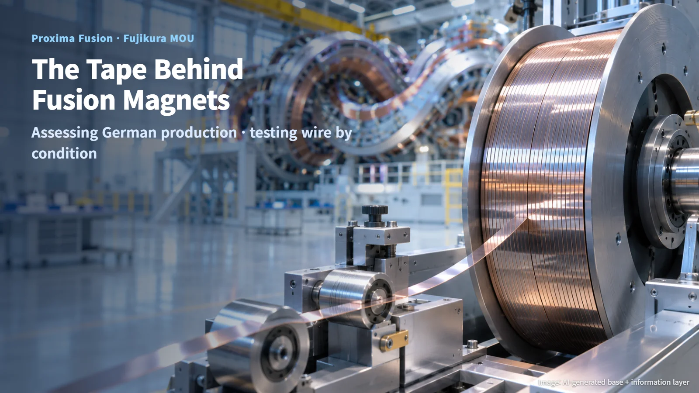
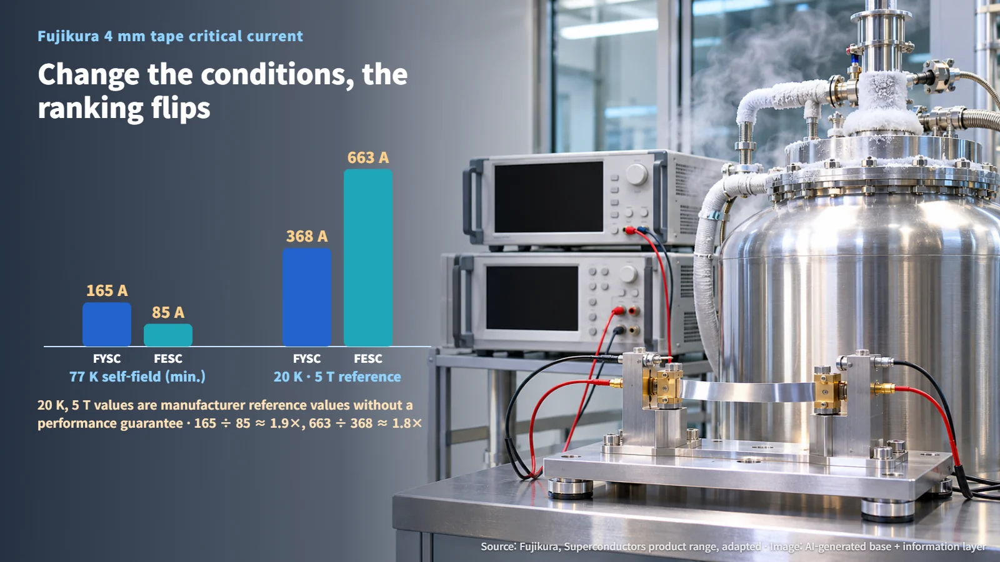
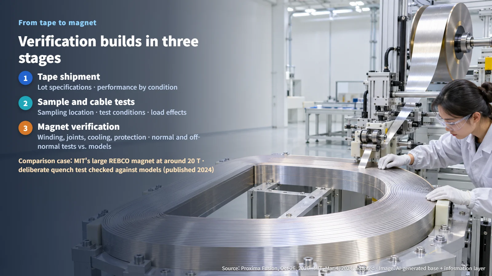
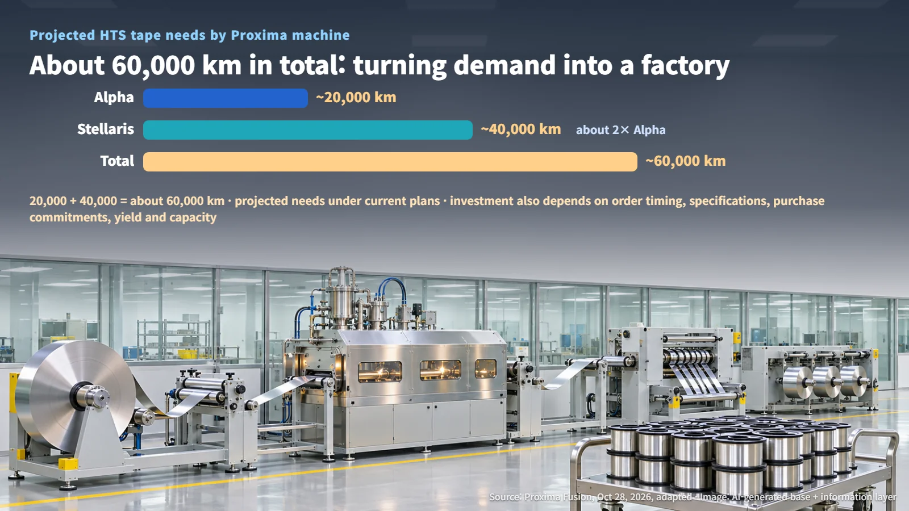

Germany · Japan · Fusion
Making Fusion Magnet Tape in Germany: The Proxima–Fujikura MOU and How Superconducting Wire Is Tested
Proxima Fusion and Fujikura will assess industrial-scale HTS tape production in Germany; tape performance depends on the conditions it is tested under.
Fusion usually brings to mind plasma hotter than the core of the Sun. What holds that plasma in place, though, is a set of enormous magnets, and the performance of each magnet starts with a thin strip of tape wound inside it. Like yesterday's post on a U.S. DOE INFUSE project, this story is about the enabling technology underneath fusion commercialization rather than the reactors themselves.

What the MOU Covers: Assessing German Production, Plus Heating and Fuel Cooperation
On October 28, German fusion company Proxima Fusion and Japan's Fujikura announced a memorandum of understanding to study a manufacturing site for high-temperature superconducting (HTS) tape. The first step is to assess the technical, commercial and economic requirements for producing the tape at industrial scale in Germany. The idea is to connect Fujikura's manufacturing experience with the demand that future fusion machines will create.
On the same day, Proxima announced a separate MOU with Kyoto Fusioneering. That cooperation centers on gyrotrons (high-power microwave sources that heat the plasma) and fuel-cycle technology, with development and validation work for each technology handled as its own track. On November 3, ANS reported on these agreements together, as deals signed around a Japan–Germany meeting.
The partnership is currently at the requirements-assessment stage. The next steps are the results of that assessment and the investment decisions that follow from it, which is where a construction schedule and a firm production capacity would be set.
The Same Tape Scores Differently Under Different Conditions
HTS tape is a wire made by depositing a thin layer of REBCO (rare-earth barium copper oxide) on a metal strip. When that layer is cooled, it carries large currents with zero electrical resistance. Many strands are bundled into a cable, and the cable is wound into a magnet.
The headline measure of a tape is its critical current: the maximum current it can carry while staying superconducting. That limit depends on temperature, on the strength of the magnetic field, and on the angle between the tape and the field. Two 4 mm products that Fujikura publishes make the point clearly:
- FYSC-SCH04: critical current of 165 A or more at 77 K in self-field (the condition that includes the field generated by the transport current itself); reference value of 368 A at 20 K and 5 T; 75 μm substrate
- FESC-SCH04: 85 A or more at 77 K in self-field; reference value of 663 A at 20 K and 5 T; 50 μm substrate; artificial pinning applied
(Source: Fujikura, Superconductors product range, adapted)
At 77 K, FYSC comes out ahead: 165 ÷ 85 ≈ 1.9×. At the colder, higher-field reference point of 20 K and 5 T, FESC leads: 663 ÷ 368 ≈ 1.8×. Change the conditions and the ranking flips. Artificial pinning is the option Fujikura offers for low-temperature, high-field magnets.

Fujikura labels the 20 K and 5 T figures as reference values without a performance guarantee. So when reading a product table, the first question is the measurement condition, and only then the number of amperes. Comparisons are most useful when made at the conditions a real magnet will actually operate in.
From Sample to Magnet: Verification Builds Up in Stages
Proxima explains that samples cut from the same reel can produce different measurements, and that mechanical loads also affect performance. Its public description of its testing program shows how it handles this: limited high-field test time is prioritized through preliminary screening, and promising tape then moves on to follow-up tests under realistic cryogenic and magnetic-field conditions.
Verification builds up in three layers. At wire delivery, each lot is checked against its specifications and its performance under defined conditions. In sample and cable testing, the location each sample was taken from and the test conditions are recorded. Finally, at the magnet level, winding, joints, cooling and protection design come together, and the magnet is tested in both normal and abnormal states, with results compared against analysis.
MIT offers an example of that final stage. In 2021, MIT used a large REBCO magnet to reach a field of around 20 T, and in 2024 it published the results of that test and the follow-up verification. The team also tested abnormal conditions such as cutting the power. In a deliberate quench test (a quench is when superconductivity breaks down and the conductor heats locally), part of the coil melted locally. MIT says it compared each model's predictions with the actual temperatures and damage and used that comparison to inform its next designs. MIT's magnet was built for a tokamak, while Proxima is designing a stellarator, so the transferable lesson is the method: test the hardware and check the models against what happened.

20,000 km and 40,000 km: Turning Demand Into a Factory
Under its current plans, Proxima says Alpha will need about 20,000 km of HTS tape and Stellaris about 40,000 km. That adds up to 20,000 km + 40,000 km = about 60,000 km, and Stellaris needs roughly twice as much as Alpha (40,000 ÷ 20,000). These are projected requirements based on the machines' design plans.

For projected demand to become a factory investment, several pieces have to line up at once: order timing, specifications, purchase commitments, manufacturing yield and production capacity. Lot-by-lot acceptance criteria, the scope of full inspection and yield guarantees for a new German site are items that will take shape in negotiations after the assessment stage.
The fusion supply chain, in the end, begins with how you read the scorecard of a single strand of tape, and under which conditions. The assessment results and procurement terms still to come will show how quickly this demand moves into real production.